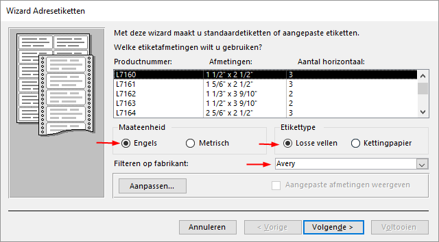
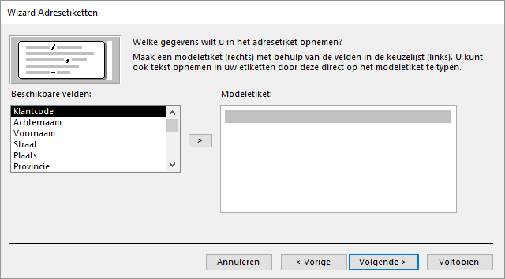

In deze taak worden adresetiketten van de klanten gemaakt met de Wizard etiketten.
Eerst moet de tabel geselecteerd worden waarin de velden voorkomen die op het etiket
moeten verschijnen. Daarna kan de Wizard etiketten gestart worden.
Open de database snoep2016.accdb.
Selecteer de tabel Klanten.
Kies tab Maken > Etiketten (groep rapporten).
Selecteer maateenheid Engels, fabrikant Avery en dan product Avery
L7160.
Figuur: Keuze etikettype Avery L7160

Klik op Volgende.
In het scherm dat nu getoond wordt kun je het lettertype en de kleur voor de
tekst wijzigen.
Accepteer de standaardinstellingen en klik op
Volgende.
Figuur: Gegevens op het etiket

Door dubbel te klikken op een veldnaam wordt deze op de plaats van de
cursor ingevoegd. De veldnaam verschijnt dan tussen accolades op het
modeletiket. Ook tekst en spaties kunnen worden ingetypt. Door op de Enter toets
te drukken wordt een nieuwe regel gemaakt.